操作系统笔记09 内存管理
内存管理介绍
- 进程管理回顾
- 进程管理提供了一个虚拟的机器接口，让每一个进程都以为是自己在独占CPU，如下图所示: 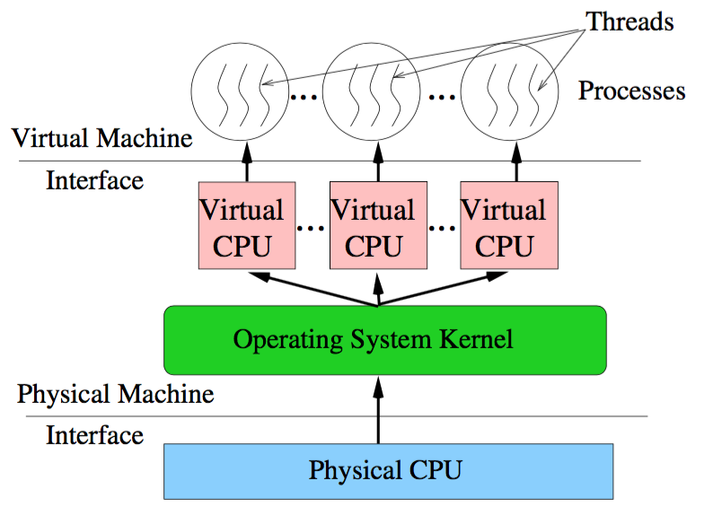
- 内存管理的任务：提供一个虚拟的机器接口，让每一个进程都以为是自己在独占RAM。
基本方法 - 以MS-DOS为例
MS-DOS (Microsoft Disk Operating System)
单用户、单任务 只能访问1MB内存：INTEL 8086/80286只有20根地址线
没有任何保护机制：INTEL 8086/80286没有提供硬件保护机制支持
在MS-DOS中, MS-DOS自己要占用1/3左右; 剩余部分留给系统唯一的进程使用。
问题1：如果某个MS-DOS下的应用程序需要超过640K的内存才能运行,怎么办?
**
覆盖**：一种允许内存能分配的小于一个进程中所需空间的技术。基本原理：只保留在任何给定时间需要的指令和数据。程序运行时并非任何时候都要访问程序及数据的各个部分，因此可以把用户空间分成一个固定区和若干个覆盖区。经常活跃的部分放在固定区，其余部分按调用关系分段。在覆盖区和外存(即磁盘)中屡次调入调出。除了程序本身外，程序员还要提供一个所谓的“overlay driver”来负责模块的调入调出。
无论进程在运行时占有多大的内存,在某一段时间内，它只会访问其中的一部分。
打破了必须将一个进程的全部信息装入主存后才能运行的限制。
目前覆盖技术已经很少被使用，除了在一些内存资源相当紧张的
嵌入式系统中。假设MS-DOS支持多任务,即系统中有多个进程。
进程必须在内存中才能运行。
运行中的进程可能会申请额外的内存。
问题2：假设系统目前有两个进程：P1和P2，而且系统已经没有内存可以使用。此时，正在运行的P1又要申请更多的内存才能继续运行，怎么办?
交换：一个进程可以暂时从内存交换到backing-store，然后再加载到内存中继续执行。OS可以将(不在运行的)P2交换到backing-store中，同时释放P2所占用的内存，并分配给P1让其继续运行。
当调度器重新调度P2运行时，OS从backing-store中加载P2到内存继续运行。
此时可能要把P1交换到backing-store中以释放足够的内存空间供P2运行。

Swap方法存在的限制：
要求计算机必须有足够大的备份存储。备份存储一般是快速、大容量的硬盘。
上下文切换要花费大量的时间：主要用于磁盘数据传输。调度算法的设计尤其重要，应尽量减少上下文切换。
被swap-out的进程必须被重新swap-in到相同的内存地址才能继续运行。
这种原始的swap-in/out已经很少被使用。但是，swap的思想非常重要：当系统内存不足时，可以向备份存储“借”一部分来使用。
多任务系统的内存管理
- 多任务环境下会带来许多内存管理问题：
- 重定位(relocation)问题
- 内存保护(protection)问题
- 内存分配(allocation)问题
源程序变成进程的过程：
- 程序员编写的源代码必须先被编译成目标文件。
- 然后通过链接器链接成可执行文件。
- 最后由操作系统加载可执行文件到内存从而形成进程。
重定位 & 地址绑定概念
- 在多任务的环境中，可执行文件可能会被加载到内存中的任何位置运行。
- 链接器在生成可执行文件时必须确定程序中各个符号(如函数、全局变量)的地址。
- 把程序中的符号映射为地址的过程叫做**
地址绑定**。 - 事实上，由于链接器无法预知程序将被加载到哪个内存位置，因此无法完成绝对的地址绑定。
- 因此，链接器只能假定程序中第一条指令的地址是0，从而用相对于它的偏移量来进行相对的地址绑定。
- 这样的程序只能被加载到0地址的内存运行。如果该程序被加载到其他非0的地址，必须对程序中所引用的地址进行修改才能运行，这个修改过程就称为**
重定位**。 - 几个概念：
- 逻辑地址：指程序中引用的地址，亦即CPU产生的地址。
- 物理地址：指系统中内存单元所看到的地址。
- 内存管理单元：指专门完成逻辑地址到物理地址转换的硬件单元，一般是CPU的一部分。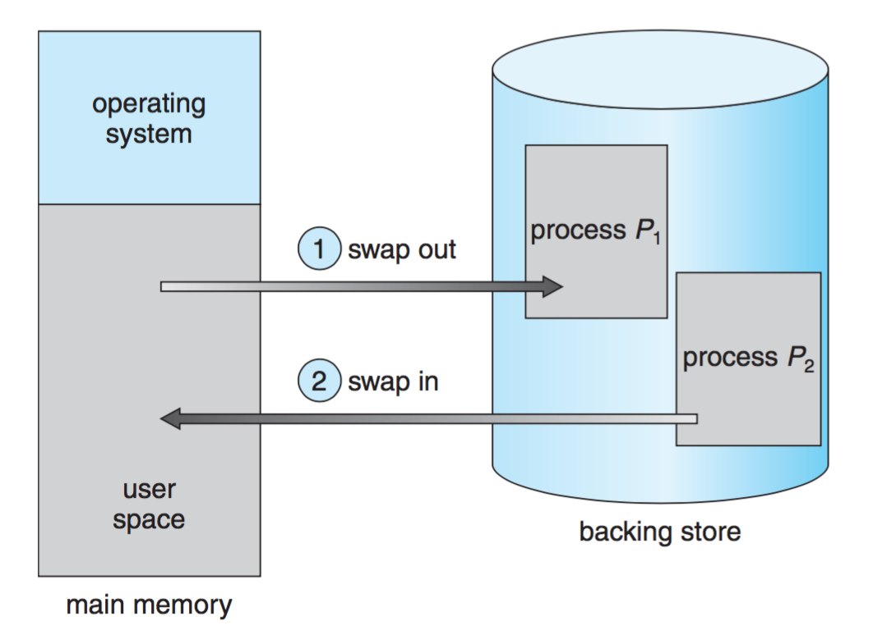
- 这里介绍的是最简单的重定位技术，只是冰山一角。
- 今天使用的操作系统(如Windows, Linux)所采用的重定位技术相当复杂，涉及到编译器、链接器、可执行文件、函数库、操作 系统内核和硬件等多个组件之间的协作才能完成。
内存保护
- 在多任务的环境中，必须要保护各个进程的内存不被其他进程访问或破坏。
- 其实，即使在单任务的环境中也存在着操作系统如何保护自己不被应用程序访问或破坏的问题。 在MS-DOS中，应用程序可以合法地把MS-DOS的内核所占的内存全部破坏。
- 对应用程序访问的每一个内存地址进行检查，看是否超出了内存范围。为了获得最好的性能，一般用**
内存管理单元**(MMU)通过硬件来实现这种检查的功能。 - 内存保护是现代操作系统必备的功能之一，它需要硬件的支持才能实施保护。
- 后面讲解的各种内存管理方法都包含有内存保护的方法。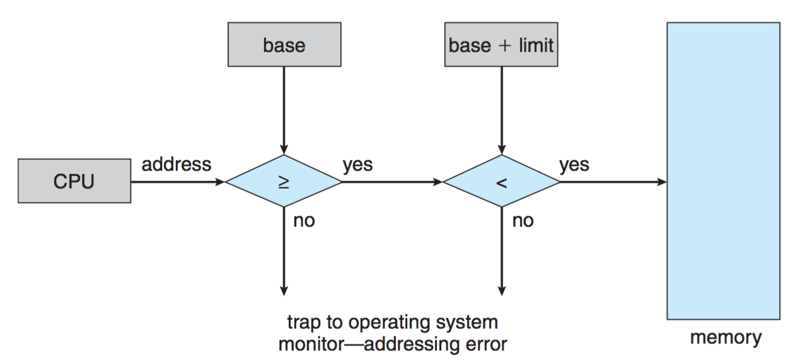
动态内存分配
- 在多任务的环境中，操作系统需要为每个新创建的进程分配一定数量的内存才能运行。当进程退出时，操作系统要回收它所占用的内存。
- 操作系统如何有效地管理内存的分配和回收，以尽量满足进程的需求？这个问题也称为**
动态内存分配问题**。 - 操作系统有一张表格，用于指出哪些内存可用和哪些内存已被占用。可用内存块称为孔。
- 最初，所有内存都可用于用户进程。
- 当有新进程需要内存时，为该内存查找足够大的孔。
- 当一个进程终止时，它将释放内存，如果新的孔与其他孔相邻，这些相邻的孔合并形成一个更大的孔。 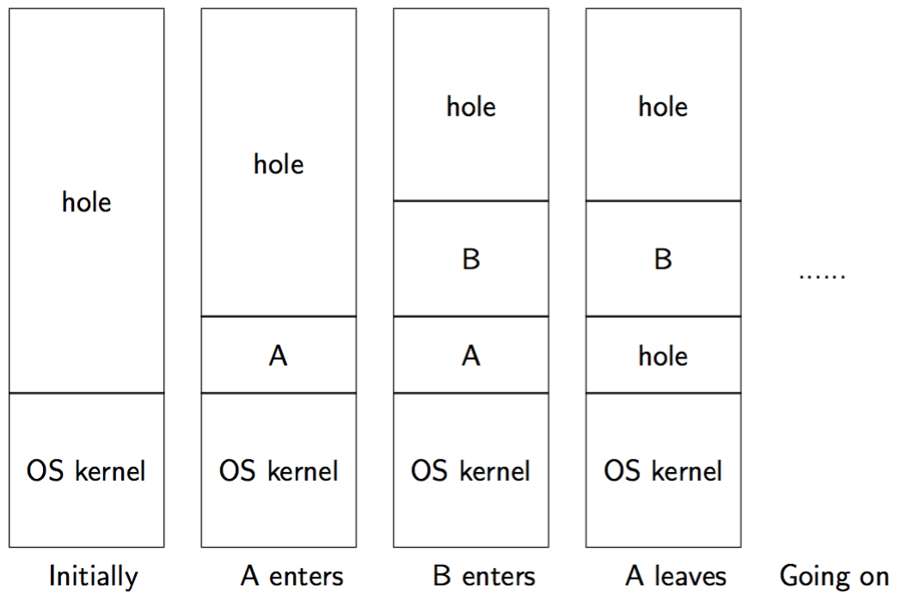
- 分配算法
- 首次适应：分配第一个足够大的孔。
- 最佳适应：分配最小的足够大的孔。
- 最差适应：分配最大的孔。
- 另一种方法：把系统内存分成固定大小的内存块，操作系统以块为单位进行内存的分配和释放。最终分配给进程的内存可能会比所请求要多一点，称多出来的这部分为**
内部碎片**。 - 分配主要解决在多任务的环境中，操作系统采用什么算法进行内存的分配和回收，减少**
外部碎片或内部碎片**，提高内存利用率。相对于外部碎片，内部碎片的情况不是很严重。 - 事实上，内存的分配和回收问题不仅出现在OS中，应用程序面临着同样的问题。
- 当进程被创建时,操作系统会采用某种算法分配一块足够大的内存给进程,由进程自己管理(其中的一部分)。
- eg. heap由进程自己管理。库函数new/delete(或malloc/free)就是操纵heap中的内存。它们所采用的分配与回收算法非常通用，相应的空间和时间利用率也很一般。在一个大型的项目中，已有的库函数可能不会满足应用的要求，需要自己开发更好的来替换它们以负责heap中内存的分配与回收。
分页内存管理
- 基本内存管理方法存在着很大的限制：
- 每个进程所占用的物理内存必须连续。
- 系统可能会产生大量外部碎片，最后不可避免地要进行compaction。
- 对整个进程进行(交换)swap-in/swap-out非常地耗时。
- 分页很好地解决了上面的问题：
- 进程所占用的物理内存不必连续。
- 没有外部碎片，但是会产生一定的内部碎片。
- 对进程所占用的部分内存进行swap-in/swapout。
- 在早期，分页系统主要由硬件来实现。如今分页由硬件和操作系统共同完成。
- 基本概念：
- 将物理内存分为固定大小的块，称为**
帧**。 - 将逻辑内存也分为同样大小的块，称为**
页**。 - **
页表**包含每页所在物理内存的基地址，用于页到帧的映射。 - 页表的一个条目称为**
页表项（PTE）**。 - 把逻辑地址分成两部分:
- 第一部分称为**
页号(p)**，页号作为页表的索引。 - 第二部分称为**
页偏移(d)**。 - 地址转换：在页表的帮助下，MMU把CPU产生的逻辑地址转换成物理地址。
- 过程如图： 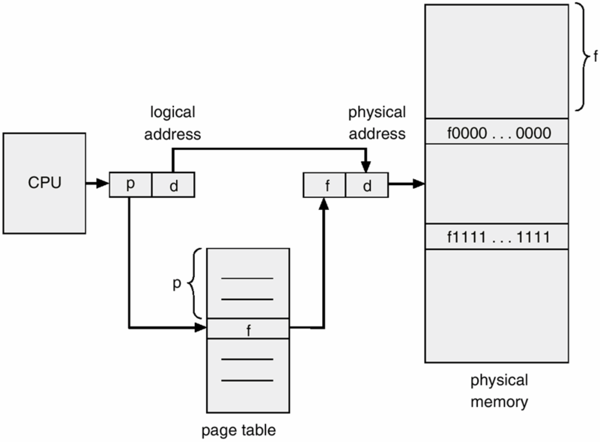
- 两个例子： 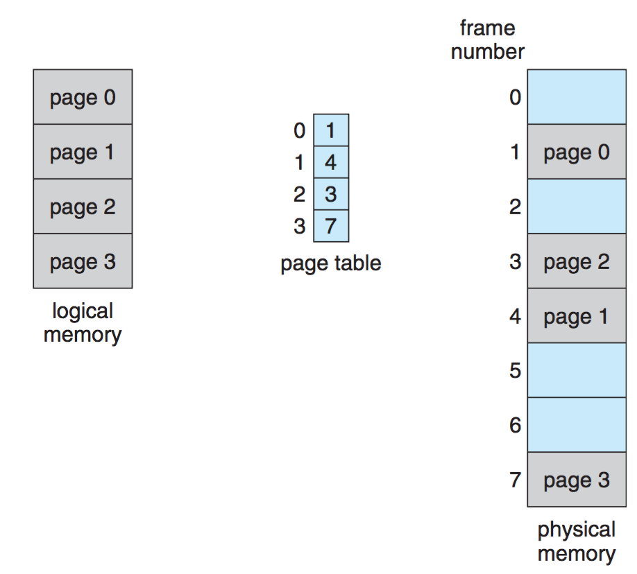 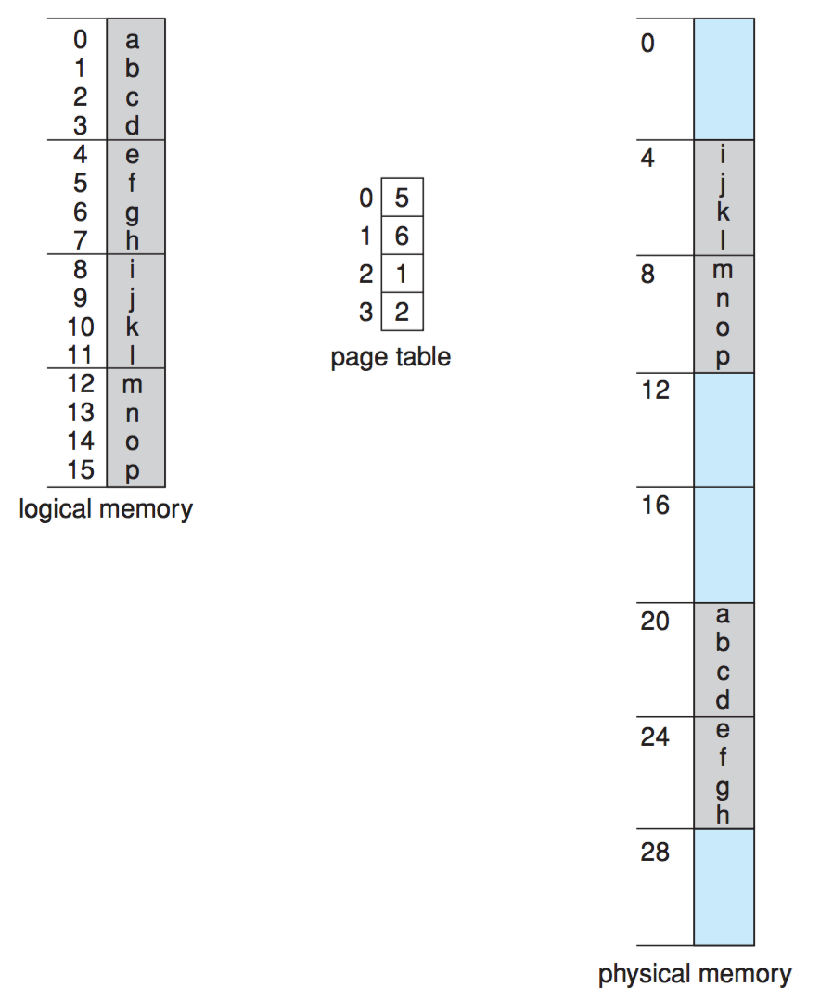
- 页 & 帧:
- 它们的大小必须相同，都是2的幂次方。
- 具体由CPU体系结构决定，常见的有1K、4K、8K、4M等。
- 地址划分
- 如果逻辑地址空间的大小为2m，而page或frame的大小为2n(n < m)，那么逻辑地址的划分如图所示： 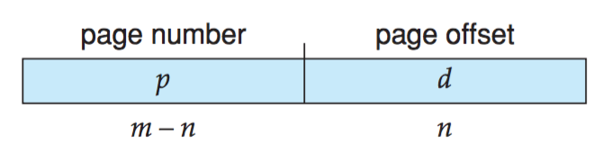
结论
- 分页的一个重要方面是用户的内存视图和实际物理内存之间的明确分离。地址翻译硬件使这些差异得到调和。该映射对用户是隐藏的，由操作系统控制。
- 由于是操作系统在控制地址映射，它必须记录系统物理内存的使用状况。
- 通常使用一个称为**
帧表**的数据结构来保存系统中每一个帧的状态，如果占用，被哪个(些)进程的哪个页所占用。 - 为每一个进程保存一个页表，只包括进程所拥有的那些页。
实现
- 页表必须被保存在内存中。CPU中的两个寄存器记录了它的信息:
- 页表基寄存器(PTBR)：保存了页表的地址。
- 页表长度寄存器(PTLR)：保存了页表的大小。
- 因此在分页中,每一个内存访问都需要两次内存操作：一次访问页表，一次访问内存数据。考虑到CPU访问内存的频率，这种地址转换成了系统性能的颈瓶。
- 为了提高地址转换效率，MMU中包含了一个高速缓存称为**
转换表缓冲区(TLBs)**。 - TLB条目由键和值组成，当关联内存根据定值查找时，会同时与所有键进行比较，如果找到条目，那么就得到相应的值域。
- TLB这种查找方式比较快。但由于硬件昂贵，通常TLB的条目数并不多，在64-1024之间。
- A的地址转换：如果A在TLB（TLB命中）中，则将帧取出。否则，从内存中的页表获取帧。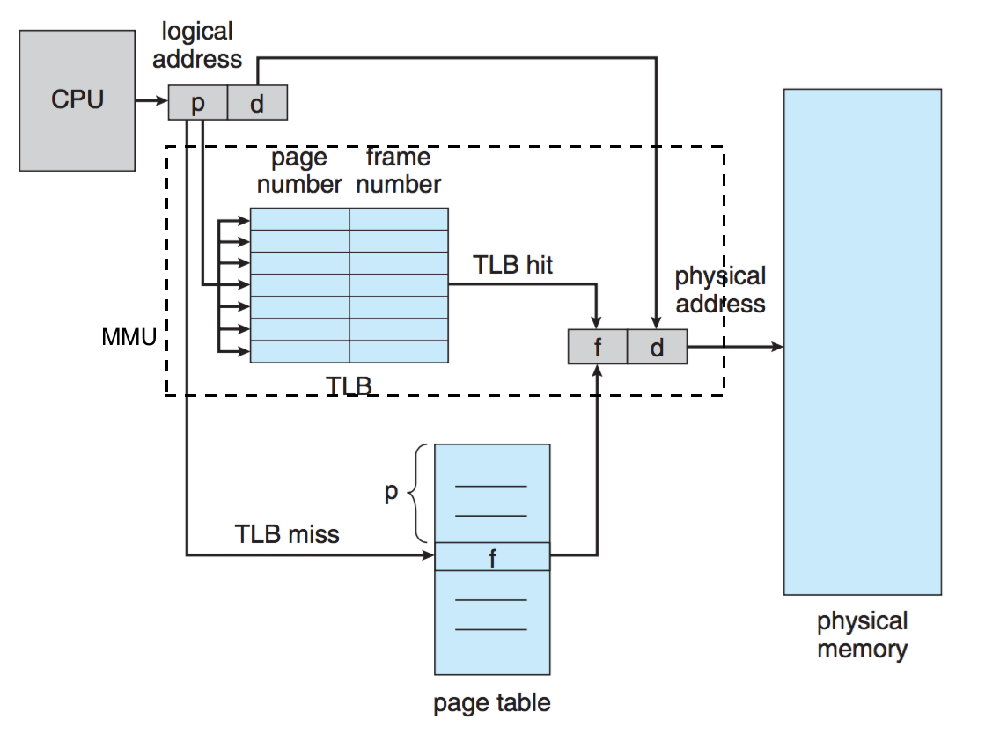
- 性能：假设
- TLB查找时间 = x
- 存储器周期时间为1微秒（10-6秒)
- TLB命中率 = y，在TLB中找到页码的次数的概率百分比。
- 有效访问时间 EAT = (1 + x) y + (2 + x) (1 - y) = 2 + x - y
内存保护
- 在分页系统中，内存保护是以页为单位。
- 保护信息通常都保存在PTE中， 可以提供只读、读写和执行(RWX - Read, Write, eXecute)保护。
- 此外，不是所有的PTE都可以使用。因此，PTE中的一位表示该PTE是否可以使用(valid/invalid)。
- 仅当该位有效时，MMU才能用它进行地址转换。 否则，MMU将通过异常向OS报告错误。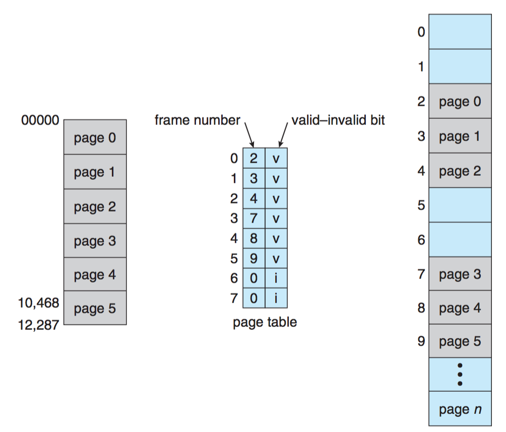
页表问题
- 假设：
- 逻辑地址空间大小：232，即4GB。
- page和frame的大小：212，即4KB。
- sizeof(PTE) = 4B。
- 一个页表要消耗多少内存?
- (232 / 2 12) × 4 = 4MB
- 记住：每一个进程都需要一个页表。
- 一个只有256MB内存的系统如何能同时运行几十个进程呢?
页表结构
- 事实上，很少的进程会使用整个地址空间(如32位机器上的4GB和64位机器上的264B );
- 页表中大部分的PTE都是处于invalid状态。
- OS无法预测一个进程的页表大小，因此只能根据进程使用内存的情况动态地伸缩。
- 显然线性的页表结构太简单，不能满足这个要求，需要新的页表结构。
- 现有的页表结构:
- 层次型页表 Hierarchical Page Tables
- 哈希页表 Hashed Page Tables
- 反向页表 Inverted Page Tables
层次型页表
- 这种方法采用“树”结构来组织页表,形成一个层次结构的页表。
- 根据这颗树的深度可以分为:一、二、三级页表等。其中，一级页表(也称为单级页表)就退化成了线性页表。
- 这里以32位逻辑地址、页面大小为4KB为例来讲解二级页表。
- 二级页表设计：
- 把一个巨大的线性页表分割成很多小的页表。
- 然后通过一个称为**
外页表**(outer page table)的表把这些小页表组织起来。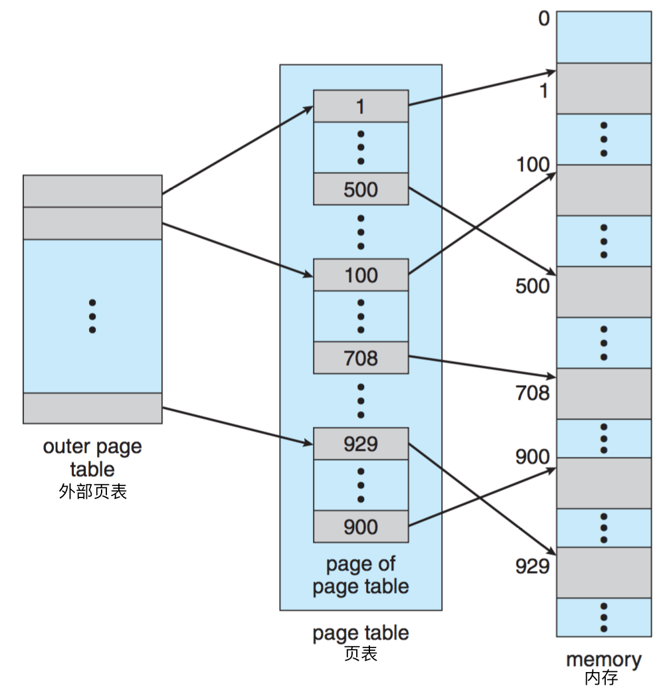 - 采用二级页表的逻辑地址与地址转换 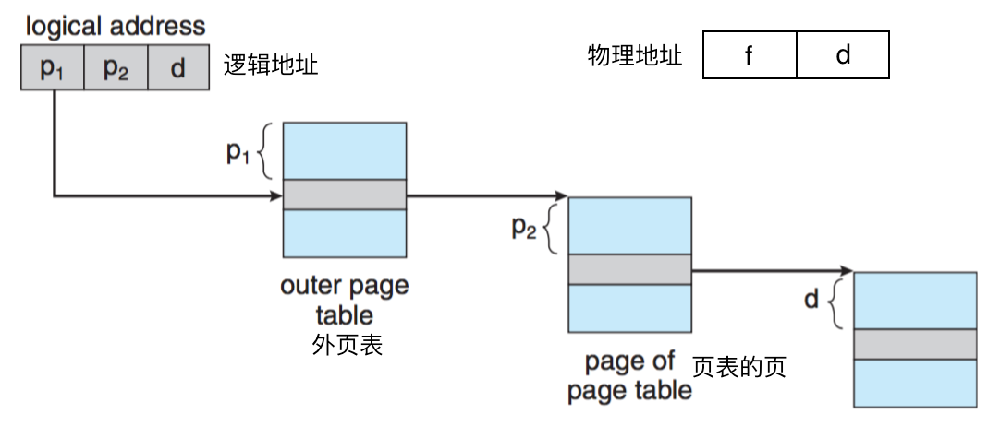 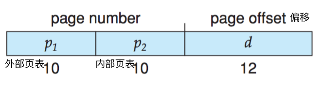
帧管理
- 前面介绍了页面的管理，以及页面到帧的映射。但是，最终保存数据的地方是帧，而不是页面。
- 操作系统需要管理系统中所有帧的分配和回收,
- 当进程被创建时，操作系统要分配足够多的帧给它，并在该进程的页表中做相应的映射。
- 当进程退出时，操作系统回收它所占用的帧。
- 最简单的方法是维护一个空闲帧链表。如图所示:

页面共享
- 在分页系统中,显然应该以页面为单位进行内存共享。
- eg. 假设系统中有三个用户同时运行某个编辑器在编辑各自的文件，显然编辑器的代码可以被共享，而各自的文件数据则是私有的。 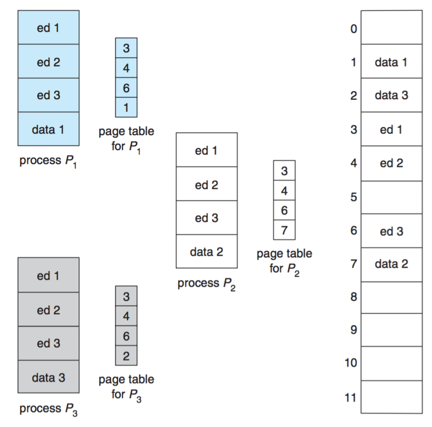
分段内存管理
- 为什么分段？
- 通常用户不会将内存视为一个线性字节数组，有的包含指令而其它的包含数据。
- 用户通常愿意将内存视为一组长度不同的段的集合。分段就是支持这种
分段把进程的逻辑地址空间分成一个个大小不等的段，每一段集中了一种类型的数据，如代码，数据，栈等等。- 与分页系统一样，这些段在物理内存中也不一定是连续的
实现
逻辑地址由有序对组成：<segment-number, offset> (<段号，段内偏移>)。(为了简单，段是编号的段号而不是通过段名来引用)
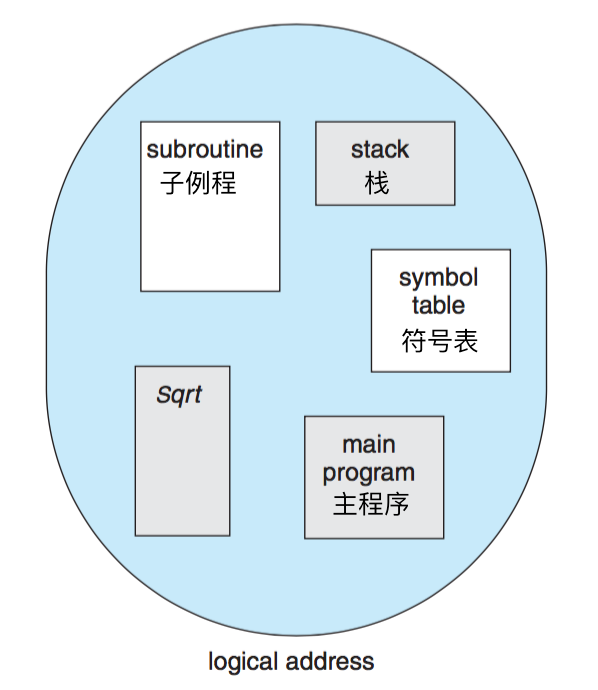<img src=”17.png” width=40%” height=”80%” />**
段表**用于将逻辑地址映射到物理地址。 每个表项都有段基地址：含该段在内存中开始的物理地址。
界限：指定该段的长度。段表长度不固定，页表固定。
保护位(RWX)。
段基地址寄存器(STBR)：指向段表在存储器中的位置。
段界限寄存器(STLR)：表示进程使用的段的个数。
地址转换：
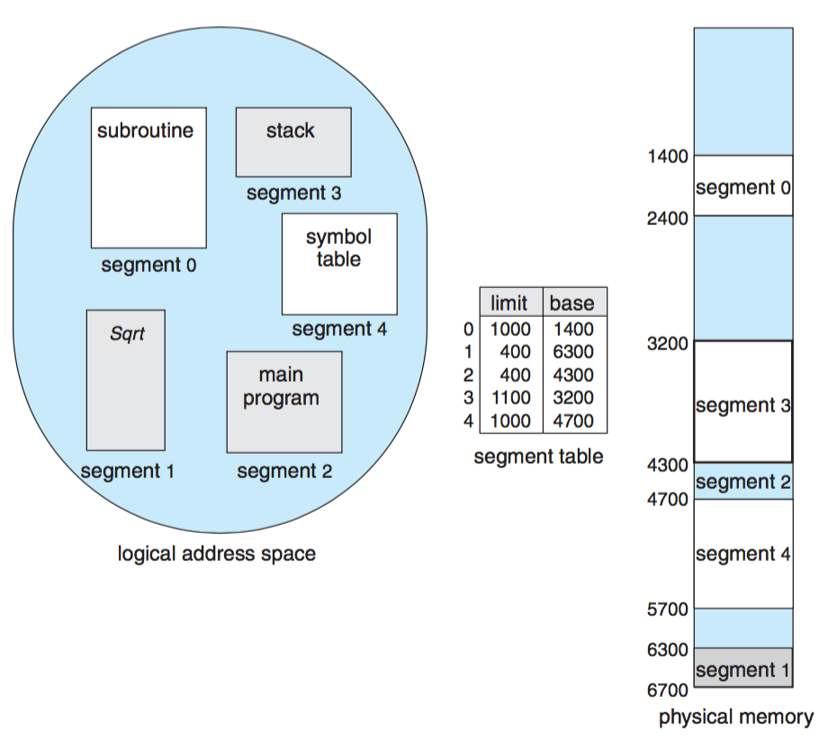在分段系统中，内存的保护与共享以段为单位
由于段的长度是根据需要变化的,因此分段会产生外部碎片。
这个问题的严重程度与操作系统的内存分配算法和进程各个段的平均大小有关。
由于系统无法预测各个进程使用内存的状况，外部碎片很难控制。因此，单纯的分段系统目前很少使用。
各个硬件产商也不再支持单纯的分段系统。
INTEL 80386以前的CPU只支持分段,而80386以后(包括80386) 的CPU则增加了分页支持。
段页式内存管理
- 分页和分段系统有各自的优缺点，因此人们就考虑结合分页和分段，这就形成了段页式内存管理。
- 段页式内存管理的地址转换包括两个步骤：先分段，再分页。